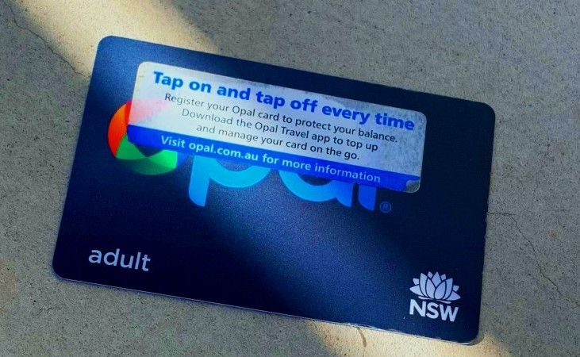

My second hometown
Sydney Australia
Basic Information
| オーストラリア | シドニー | |
|---|---|---|
| 首都 | キャンベラ Canberra | |
| 人口 | 約2530万人 (2018年9月末時点での推計) | 530万人 |
| 面積 | 約769万2024km² (日本の約21倍) | 約1万2100km² |
Best season
シドニーは日本と同じく四季の変化がはっきりしている地域です。
春にあたる9月～11月の平均気温は11～23℃、
夏にあたる12月～2月の平均気温は18～26℃で、ビーチで楽しみたい人にはぴったりの季節です。

Transportation
そこで必要になるのがNSWで使える「Opal Card」です。
日本でいうSuica、PASMOのようなものです。
使い方は日本と同じくチャージ式で、主に駅構内やコンビニエンスストアなどでチャージすることができます。
ビーチに行く際はバスをメインで使いますが、日本のバスのように車内に行先を知らせる電光掲示板はついていないので、Google mapsで現在地と目的地を照らし合わせて乗ることになります。